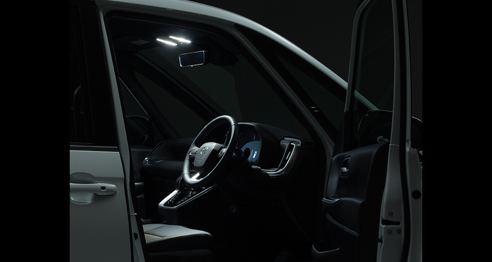
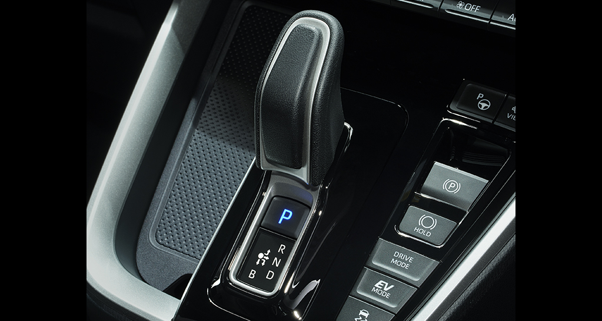

Snapshot / Toyota Systems
Toyota Systems 2023.2-2023.6 CG Modeling
秘密保持契約、セキュリティの関係で実際に作成したものを掲載することができません。
トヨタ自動車公式サイトのカーラインナップの画像は全てフルCGで、これらを手掛けていました。
フルバリエーションは3台分担当しました。



内装と外装はペアでどちらかを担当します。両方とも担当しました。
透過部品の法線修正とCADからCGへの変換時の破綻に苦労しました。